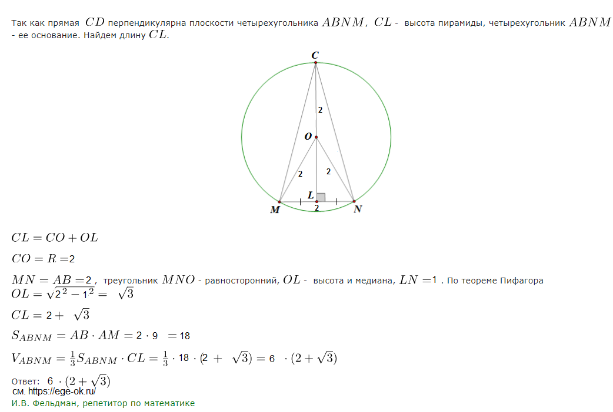

По статистике данное задание вызывает много сложностей, очень мало учеников приступают к решению этой задачи и ещё меньше получают полный балл. Для решения этого задания необходимо знание аксиом стереометрии и наличие пространственного воображения.
1.В прямоугольном параллелепипеде ABCDA1B1C1D1 на ребре C1D1 взята точка К так, что KC1=3KD1.
a) Докажите, что плоскость АСК делит диагональ BD1 в отношении 4:1, считая от точки В.
б) Найдите расстояние от точки D до плоскости АСК, если известно, что АВ=4, ВС=3, СС1=2.
2.В правильной четырёхугольной призме ABCDA1B1C1D1 сторона AB основания равна 5, а боковое ребро AA1 равно √5. На рёбрах BC и C1D1 отмечены точки К и L соответственно, причём CK = 2, a C1L = 1. Плоскость γ параллельна прямой BD и содержит точки К и L.
а) Докажите, что прямая A1C перпендикулярна плоскости γ.
б) Найдите объём пирамиды, вершина которой — точка A1, а основание – сечение данной призмы плоскостью γ.
3.В одном основании прямого кругового цилиндра с высотой 9 и радиусом основания 2 проведена хорда АВ, равная радиусу основания, а в другом его основании проведён диаметр CD, перпендикулярный АВ. Построено сечение ABNM, проходящее через прямую АВ, перпендикулярно прямой CD, так, что точка С и центр основания цилиндра, в котором проведён диаметр CD, лежат с одной стороны от сечения.
а) Докажите, что диагонали этого сечения равны между собой.
б) Найдите объём пирамиды CABNM.
